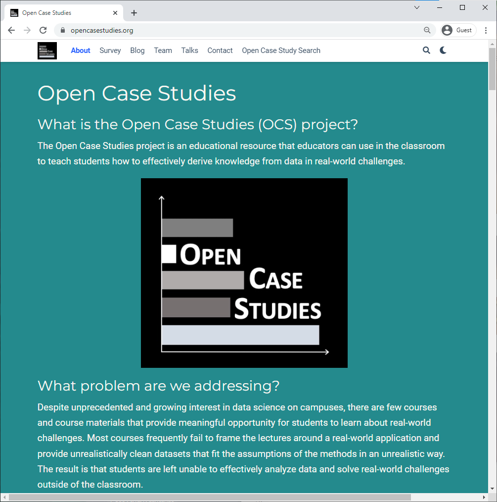

Chapter 2 Open Case Study Infrastructure
2.1 Learning Objectives
In this chapter we will discuss the overall infrastructure of the Open Case Studies platform, which includes: * our website * an open case studies search tool * our GitHub organization * an R package called OCSdata
2.2 OCS Website

Links to all of our case studies can be found on the Open Case Studies website at opencasestudies.org. The case studies are listed in a searchable table that will be detailed further in the following section. A description of the Open Case Studies’ mission, history, and people can also be found on the website as well as an archive of talks and blog posts. The website also contains a contact form that may be used to send a message to Open Case Studies to ask a question or provide suggestions.
2.2.1 Open Case Studies mission
The OpenCaseStudies website describes the mission of the Open Case Studies project, the history of its inception, and current and previous members of the OCS team, among other information.
(avocado do we need this subsection?)
2.3 OCS Case Study Search Tool
The website also includes the case study search tool to aid instructors in finding appropriate case studies for their learning objectives. Accessing the search tool and how to use it is described in more detail below.
This diagram illustrates the workflow of accessing a case study from the OCS website through the case study search table. From the table, users can use the provided links to view the original static case studies, interactive case studies, and the GitHub repositories for each. Users may find all case study source files in the case study repository as well as instructions on how to use the case study.

The Open Case Study Search tool can be found at the bottom of the OCS Website. The tool consists of a table with searchable columns and each row describing an individual case study. This searchable table is designed to aid instructors in identifying appropriate case studies for their learning objectives. The columns are organized as such:
- The “Case Study” column contains the case study name and a link to the static and interactive versions of the case study (if available)
- The “GitHub Repository” column provides links to the case study’s associated GitHub repository that contains all case study source files, data, code, and more
- The “Packages” column details all the R packages used in the case study, and can help identify if a case study teaches a specific data import, wrangling, analysis, or visualization skill
- The “Objectives” column details the learning objectives of each case study (e.g. importing data from PDF files, reshaping data, specific statistical analysis, etc.)
- The “Category” column lists the source of funding or project that the case study is associated with
The main two columns likely to be helpful in identifying appropriate case studies are the “Packages” and “Objectives” columns. Users may search for keywords across all columns using the overall search bar, otherwise users can search individual columns of interest.
This table can be used to access all case study resources:

2.4 Open Case Studies GitHub Organization
GitHub is a website and cloud service that enables developers to store, manage, and track changes to their code. OCS uses GitHub for both development and distribution purposes. Users have complete access to all case study material through our OCS GitHub page where each case study is hosted in an individual repository. The repository contains all the materials needed for the case study. This includes the case study text to be distributed to students, the data used in the case study (discussed below), additional documents and references, and brief guidelines on case study use.
Data included in the GitHub repository is available in multiple formats to enable modular use of the case studies. This diagram explains the case study data folder structure and how data is categorized into different sub-folders:

Data included in the GitHub repository is available in multiple formats to facilitate modularization of the case studies as described below. To use the case study data, you can download the GitHub repository directly or use the OCSdata R package described below.
2.5 OCSdata
To simplify the process of accessing the data required for each case study, we have created the OCSdata R package. Briefly, the OCSdata package creates a new folder called “OCSdata” where it downloads the data needed for a specific case study. Users can download the data in its original raw format or in various processed formats that correspond to different stages of data wrangling and cleaning. This allows users to perform the data exploration and wrangling or the data visualization and analysis sections of the case study without having to process the data from the raw files. For some of the case studies, the OCSdata package also downloads extra source data that is not used in the case study.
| Data Folder | Case Study Section | OCSdata Function |
|---|---|---|
| raw | Data Import | raw_data |
| imported | Data Exploration, Data Wrangling | imported_data |
| wrangled | Data Visualization, Data Analysis | wrangled_csv, wrangled_rda |
| simpler_import | Data Import | simpler_import_data |
| extra | Suggested Homework (?) | extra_data |
(avocado edit this table to fit with context better)
2.5.1 Getting Started with OCSdata
The OCSdata package is available on the package repository CRAN. It requires R 3.5 or higher and can be installed in R as follows:
install.packages("OCSdata") #only run once to install package
library(OCSdata) #run every new R session to load package2.5.2 Downloading raw data
The raw_data function will download the raw data files that can be imported into R.
The first argument is the name of the case study. A list of case study names can be found in the package documentation online or by typing ?raw_data in R.
The outpath argument is a string specifying the folder where the data should be downloaded. To download the data to a folder named “OCS_data” in the current working directory, you can supply getwd() to the output argument. If nothing is provided for the argument, you will be prompted to enter 1, 2, or 3 to download the data into the current director, to specify the download path, or to cancel, respectively.
In the following example, we download the raw data for the “Opioids in the United States” case study to the current directory.
raw_data("ocs-bp-opioid-rural-urban", outpath = getwd())2.5.3 Downloading data in other formats
The OCSdata package can be used to download the data in various processed formats that may be helpful in skipping certain case study sections and focusing on data wrangling and/or analysis and visualization. All of the functions take the same arguments described above.
2.5.3.1 Simpler import
The simpler_import_data function will download raw data files that have been converted to file formats that are easier to import into R, typically .csv. Some case studies offer this option when the original raw files require a more complicated import step.
simpler_import_data("ocs-bp-opioid-rural-urban", outpath = getwd())2.5.3.2 Importing data as R objects
The imported_data function will download raw data files in .rda format. This means the data have already been imported into R objects. This can be used to skip the data import section and start directly with data wrangling. The R objects files can be imported into R by either double clicking on the files in RStudio or using the load() function as follows.
imported_data("ocs-bp-opioid-rural-urban", outpath = getwd()) #download data in .rda format
file_path = "~/OCS_data/data/imported/land_area.rda" #specify download directory
load(file_path) #load R objects 2.5.3.3 Importing wrangled data
The following functions will download the data files that have already been wrangled and are ready to be analyzed. These come in both .csv and .rda formats.
Download as csv files:
wrangled_csv("ocs-bp-opioid-rural-urban", outpath = getwd()) Downloading as R objects:
wrangled_rda("ocs-bp-opioid-rural-urban", outpath = getwd()) 2.5.4 Downloading extra data
Some case studies have extra data are not used in the case study but can be used to explore the case study subject from different perspectives. These data but can This data can be downloaded using the extra_data function.
extra_data("ocs-bp-opioid-rural-urban", outpath = getwd()) 2.5.5 Downloading all case study data
The zip_ocs function will download the all of the repository files in a .zip folder and unzip them into a specified directory. This includes the case study data in all the formats detailed above (raw, simpler_import, imported, wrangled, and extra). It also includes the case study .Rmd file, which can be modified by instructors as needed.
zip_ocs("ocs-bp-opioid-rural-urban", outpath = getwd()) 2.5.6 Forking the case study repository
2.6 Feedback
If you would like to provide feedback on the Open Case Studies please do so with our user feedback survey. The survey should take no more than 10 minutes to complete and can be found on the OCS website as well as within the case studies themselves. Your feedback helps us learn more about how to improve the data science education experience. Part of this includes getting a better understanding of who is using our case studies and how so that we can better design our case studies. We would greatly appreciate you filling it out if you have the time!
## R version 4.0.2 (2020-06-22)
## Platform: x86_64-pc-linux-gnu (64-bit)
## Running under: Ubuntu 20.04.3 LTS
##
## Matrix products: default
## BLAS/LAPACK: /usr/lib/x86_64-linux-gnu/openblas-pthread/libopenblasp-r0.3.8.so
##
## locale:
## [1] LC_CTYPE=en_US.UTF-8 LC_NUMERIC=C
## [3] LC_TIME=en_US.UTF-8 LC_COLLATE=en_US.UTF-8
## [5] LC_MONETARY=en_US.UTF-8 LC_MESSAGES=C
## [7] LC_PAPER=en_US.UTF-8 LC_NAME=C
## [9] LC_ADDRESS=C LC_TELEPHONE=C
## [11] LC_MEASUREMENT=en_US.UTF-8 LC_IDENTIFICATION=C
##
## attached base packages:
## [1] stats graphics grDevices utils datasets methods base
##
## loaded via a namespace (and not attached):
## [1] bookdown_0.24 crayon_1.3.4 digest_0.6.25 R6_2.4.1
## [5] lifecycle_1.0.0 magrittr_2.0.2 evaluate_0.14 highr_0.8
## [9] pillar_1.4.6 rlang_0.4.10 stringi_1.5.3 fs_1.5.0
## [13] jquerylib_0.1.4 ellipsis_0.3.1 vctrs_0.3.4 rmarkdown_2.10
## [17] tools_4.0.2 stringr_1.4.0 readr_1.4.0 hms_0.5.3
## [21] xfun_0.26 yaml_2.2.1 compiler_4.0.2 pkgconfig_2.0.3
## [25] htmltools_0.5.0 ottrpal_0.1.2 knitr_1.33 tibble_3.0.3